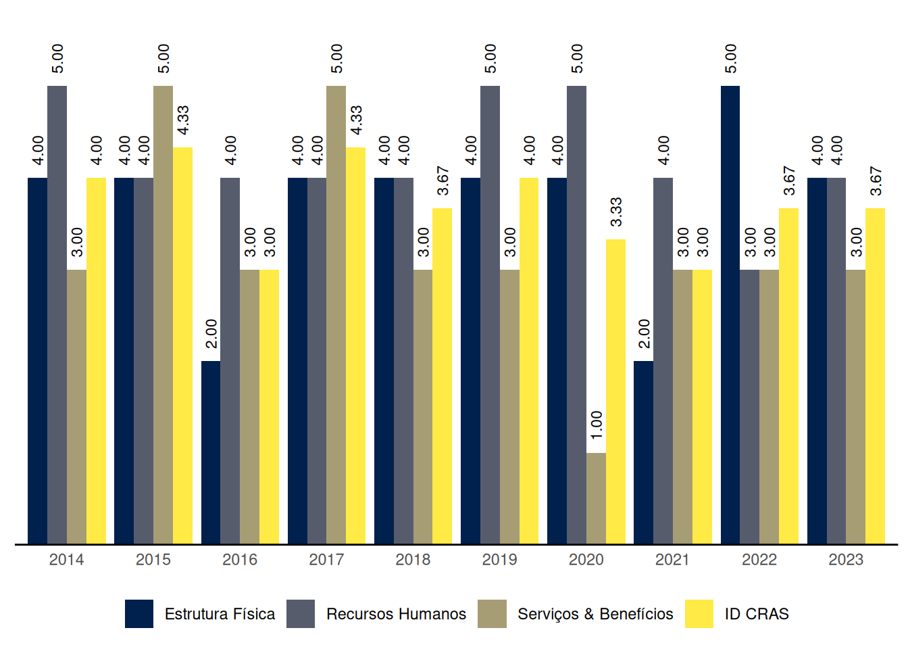

Curralinhos
Relatório de Indicadores Censo SUAS 2023 do município de Curralinhos, Piauí
1 ID CRAS: Índice de Desenvolvimento do CRAS
O ID CRAS é um indicador sintético que retrata o grau de desenvolvimento do CRAS. Ele é composto por três dimensões: Estrutura Física, Recursos Humanos e Serviços & Benefícios. Em cada dimensão é atribuída uma nota de 1 a 5 de acordo com critérios indicativos do nível de desenvolvimento do CRAS, sendo 5 o nível máximo de desenvolvimento. O ID CRAS é a média das notas alcançadas nas três dimensões.
O Gráfico 1 mostra a evolução das médias do ID CRAS ao longo dos anos no município de Curralinhos, Piauí.
| Capacidade de até: | Quantidade |
|---|---|
| 2.500 famílias referenciadas | 1 |
| 3.500 famílias referenciadas | 0 |
| 5.000 famílias referenciadas | 0 |
As seções a seguir apresentam os resultados do município de Curralinhos em cada uma das dimensões do ID CRAS, bem como os requisitos para se alcançar os níveis superiores.
1.1 ID CRAS: Dimensão Estrutura Física
1.1.1 CRAS com capacidade de referenciamento para até 2.500 ou 3.500 famílias
Na dimensão Estrutura Física, o nível de ID do CRAS com capacidade de referenciamento para até 2.500 ou 3.500 famílias no município de Curralinhos é 4.
O CRAS de nível 4, com capacidade de referenciamento para até 2.500 ou 3.500 famílias, na dimensão Estrutura Física:
- Possui recepção; e
- Possui no mínimo 2 salas de atendimento, sendo pelo menos 1 com capacidade para 15 ou mais pessoas; e
- Possui no mínimo 2 banheiros; e
- Possui acessibilidade, ao menos parcial; e
- Possui pelo menos 1 computador conectado à internet.
Para alcançar o nível 5 na dimensão Estrutura Física, o CRAS com capacidade de referenciamento para até 2.500 ou 3.500 famílias precisa, além dos requisitos do nível 4:
- Possuir no mínimo 1 sala administrativa; e
- Possuir acessibilidade; e
- Possuir conjunto de equipamentos que inclua, no mínimo: 2 computadores conectados à internet, impressora, telefone e veículo exclusivo ou compartilhado.
1.1.2 CRAS com capacidade de referenciamento para até 5.000 famílias
Curralinhos não tem CRAS com capacidade de referenciamento para até 5.000 famílias.
1.2 ID CRAS: Dimensão Recursos Humanos
1.2.1 CRAS com capacidade de referenciamento para até 2.500 famílias
Na dimensão Recursos Humanos, o nível de ID do CRAS com capacidade de referenciamento para até 2.500 famílias no município de Curralinhos é 4.
O CRAS de nível 4, com capacidade de referenciamento para até 2.500 famílias, na dimensão Recursos Humanos:
- Possui no mínimo 4 (7, se EV) profissionais, sendo pelo menos 3 (5, se EV) com nível superior; e
- Possui no mínimo 1 Assistente Social (2, se EV); e
- Possui coordenador com nível superior.
Para alcançar o nível 5 na dimensão Recursos Humanos, o CRAS com capacidade de referenciamento para até 2.500 famílias precisa, além dos requisitos do nível 4:
- Possuir no mínimo 5 (9, se EV) profissionais (sendo pelo menos 3 (5, se EV) com nível superior); e
- Possuir no mínimo 1 Psicólogo; e
- Possuir no mínimo 1 profissional de nível superior com vínculo estatutário ou empregado público celetista.
1.2.2 CRAS com capacidade de referenciamento para até 3.500 famílias
Curralinhos não tem CRAS com capacidade de referenciamento para até 3.500 famílias.
1.2.3 CRAS com capacidade de referenciamento para até 5.000 famílias
Curralinhos não tem CRAS com capacidade de referenciamento para até 5.000 famílias.
1.3 ID CRAS: Dimensão Serviços & Benefícios
Na dimensão Serviços & Benefícios, o nível de ID do CRAS no município de Curralinhos é 3.
O CRAS de nível 3 na dimensão Serviços & Benefícios em município de porte Pequeno I:
- Executa o PAIF realizando no mínimo as seguintes atividades: acompanhamento de famílias, grupo/oficina com famílias, visitas domiciliares e orientação/acompanhamento para inserção no BPC; e
- Possui oferta de Serviço de Convivência pelo menos para um ciclo de vida (oferta direta do CRAS ou por meio de unidades a ele referenciadas); e
- Possui forte articulação com os Serviços de Educação e Saúde no território.
Para alcançar o nível 4 na dimensão Serviços & Benefícios, o CRAS em município de porte Pequeno I precisa, além dos requisitos do nível 3:
- Ter quantidade média de famílias em acompanhamento no mês, dividida pela equipe técnica (Assistentes Sociais e Psicólogos) não inferior a 20 nem superior a 100; e
- Executar o PAIF realizando palestras, campanhas ou eventos comunitários e acompanhamento dos encaminhamentos realizados, além das atividades exigidas para o nível 3; e
- Possuir oferta de Serviço de Convivência para no mínimo dois ciclos de vida (oferta direta do CRAS ou por meio de unidades a ele referenciadas); e
- Funcionar no mínimo 5 dias por semana e 40 horas semanais.
2 ID CREAS: Índice de Desenvolvimento do CREAS
O ID CREAS é um indicador sintético que retrata o grau de desenvolvimento do CREAS. Ele é composto por três dimensões: Estrutura Física, Recursos Humanos e Serviços & Benefícios. Em cada dimensão é atribuída uma nota de 1 a 5 de acordo com critérios indicativos do nível de desenvolvimento do CREAS, sendo 5 o nível máximo de desenvolvimento. O ID CREAS é a média das notas alcançadas nas três dimensões.
Curralinhos não tem CREAS.